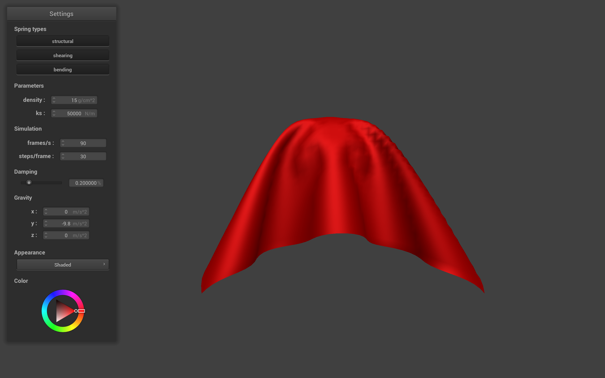
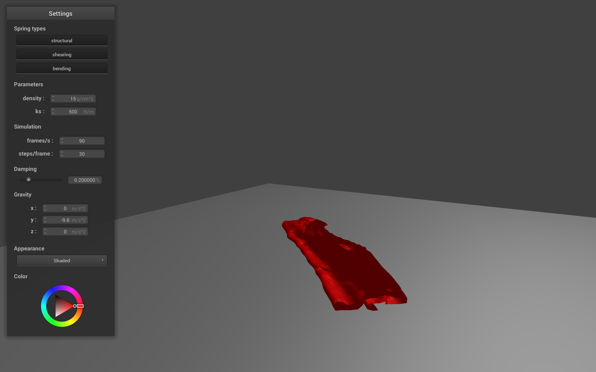

Overview
In this project, I have implemented a simple mass and spring based three dimensional cloth simulation that tries to realistically capture the motion of real cloth. Modeling the cloth as a grid of point masses, various constraints of cloth motion can be enforced, namely structural constraints, which keep the point masses generally where they should be, shearing constraints, which prevents the cloth from shearing, and bending constraints, which prevent the cloth from folding over itself on a row of point masses. To prevent the loss of control common with pure a Eurlearian model, the cloth is updated using Verlet integration, approximating motion fairly realistically. The cloth is able to collide with objects such as the sphere and plane, and with the speed up provided by partitoning the cloth masses into a spacial map, the cloth can simulate self-collisions as well so as to not fall through itself.
Part I: Masses and springs
To begin, we first needed to create the cloth model using a grid of point masses and springs. Given the cloth parameters num_width_points and num_height_points, point masses are created evenly spaced over the height and width of the cloth. Springs are then placed over the appropriate point masses to enforce specific constraints. Structural springs for a point masses are connected to the point mass above and to the right, enforcing the grid structure of the cloth. Shearing springs for a point mass are connected to the point mass to the diagonal upper left and diagonal upper right, making sure the cloth doesn't shear and fold in on itself. Finally Benidng springs are placed from a point mass to the mass two to its right and two above so that the cloth doesn't bend too easily in the 3rd dimension. The resulting wireframe is shown below:
|
|
|
Below shows the cloth with and without the diagonal springs enforcing shearing constraints:
|
|
|
Part II: Verlet Integration
In part two, using Verlet integration, we may simulate the motion of the cloth relatively realistically. First we accumulate all external forces like gravity for every point mass, and then using Hooke's law, accumulate all forces added by the springs. After this accumulation, we apply the following formula to update the positions of every point mass over a timestep d_t with current position x_t:
x_{t + d_t} = x_t + (1 − damping) * (x_t − x_{t − d_t}) + F / m + (d_t)^2F above is the sum of accumulate forces for the point mass and m is the point mass's mass. To prevent over-deformation and the blowing up of parameters, springs stretched longer than 10% of their rest lengths are corrected so that their point masses are at most that distance apart. This allows for the cloth to moth fairly realistically as shown in the images below:
Varying ks
Here we vary the spring constants, which tell us how much force the springs will exert given the distance from their rest length.
ks = 500 N/m

|
ks = 5000 N/m

|
ks = 50000 N/m
We see that with a lower spring constant, the constraints are more loosely enforced as the springs exert less force on the point masses to push or pull them into position. We see as a result a flatter and stretchier cloth surface as the shearing and structural springs allow for more movement of point masses into a comfortable resting state, and more sharp creases when bent due to the bending springs pulling or pushing less aggressively. As we increase to the default 5000 N/m, we see that the cloth's final resting state is less flat and closer to the starting square shape than before. Additionally the increased bending constraint force makes the creases around the top more round and less sharply creased. As we increase the constant again up to 50000 N/m, the cloth now is much more resistant to deformation. The sinking portion between the two pinned masses is less sunken by gravity as the springs more strictly enforce structural and shearing constraints so the cloth is hardly bent. The bending is more distributed through the whole of the cloth as seen in the small hills over the cloth's surface.
Varying Density
Varying density affects the masses of the individual point masses.
density = 5 g / cm^2

|
density = 15 g / cm^2
|
|
density = 30 g / cm^2
We see that with the low density cloth shows more creases in the cloth in relation to the other two. The deformation force on the point masses due to gravity is just weaker as F = ma , too weak to overcome the structural forces preventing the cloth from shearing or losing its structure, creating ripples along the cloth's surface. In layman's terms, the cloth is just too light to pull out the sheet. Increasing the density to the default 15 g/cm^2, we see that now that the force due to gravity is strong enough on the masses to overcome the resistance to bending and shearing and pull the cloth down flatter. The sunken area between the pinned masses also sinks lower as the larger mass leads to a larger downward force. The effects are exaggerated further upon increasing the density to 30 g/cm^2. The sunken arc sinks even deeper and the cloth is pulled even more strongly downwards, the center of the bottom of the cloth even beginning to bulge downwards under the force of gravity despite the forces of the constraint strings trying to maintain the cloth's shape.
Varying Damping
From the above equation, we see that damping limits the change between updates. Below are the results of using different damping constants:
damping = 0.1
damping = 0.2
damping = 0.4
With a damping constant of 0.1, the motion of the individual point masses is more exaggerated as the cloth seems to ripple and wave more while falling. The cloth also continues to swing past its resting position and back before coming to a rest as the damping is low so that changes between points are larger than default. Increasing damping to the default of 0.2, the motion is less jelly like and more smooth, the changes in position scaled down more so that the cloth parts move more cohesively. The damping forces are preventing too big of changes in between updates. Increasing the damping further to 0.4 furthers this trend. The cloth now seems stiffer and makes much more gradual changes than before, falling more like a heavy sheet than a silky cloth.
Resting state of Pinned4.json
|
|
|
Part III: Collisions
In part 3, collisions between the cloth and other surfaces can be handled. When a point mass collides with a surface, meaning that the point step in the last time step was on the opposite side of the object, we simply move the point mass back towards the point of intersection with an additional buffer of SURFACE_OFFSET so that the point is again on the correct side. Below shows the result of spherical collisions at different sprint constant values:
Sphere Collisions
ks = 5000 N/m
ks = 500 N/m
With the lower spring constant, like before, we see that the effect on gravity is much more apparent. The cloth appears stretchier and less bound to its starting structure as the spring forces generated are weaker than before. The point masses are able to bend and pull themselves more flat against the sphere than in the previous example.
ks = 50000 N/m
|  |
With the larger spring constant, the opposite occurs. The cloth constraints become more strict as the springs now exert more force on the point masses. The bending constraints now overcome the force of gravity, forcing the cloth to point outwards rather than hang over the edge of the sphere, as well as make the cloth more rounded as opposed to creased from before. The shearing and structural springs also make the cloth less able to stretch itself float out over the sphere, resulting in the strange covering shape.
Below, the cloth falls to rest on a plane:
Plane Collision
Part IV: Self-Collisions
In the final part of this project, the cloth is now able to collide with itself so as to not pass through itself unrealistically. To avoid the naive implementation and poor performance of checking every point mass with every other point mass, we use spacial hashing to group points in the same volume and reduce the number of points needed to iterated through to check for collisions. The scene is partitioned into volumes with dimensions w * h * t, where w = 3 * width / num_width_points, h = 3 * height / num_height_points, and t = max( w, h). For each point, we calculate which volume it is in and map the volume to a float value. We insert the point into the spacial hash map with the float as the key. When checking for collisions, we then only need to check for points closer than 2 * thickness apart in the same volume grouping. The cloth will now fold over itself rather than clipping:
Cloth at various timesteps with default parameters
We see that the cloth snakes and folds over itself upon reaching the plane.
Varying ks
We can vary the spring constant and density of the cloth to observe some interesting effects.
ks = 500
|  |
By decreasing the spring constant, we again reduce the effects of the structural, shearing, and bending constraints, allowing the cloth to be stretchier and crease more easily. The resulting cloth shows more smaller bends and folds than the default parameters above, coming to rest closer to the ground overall.
ks = 50000
By increasing the spring constant, we now do the opposite and make the constraints tighter. Now, as the bending springs exert more force, the cloth becomes stiffer and harder to bend or crease, making the curves as it hits the plane much rounder and larger than the previous images. Because now the cloth is harder to fold or crease, we see that it's final resting state has a much more squarely folded sheet with a flat surface and two main rounded folds.
Varying Density
Now by varying density, we are again essentially varying the mass of the point masses of the cloth.
density = 5 g / cm^2
With a lower density, the cloth become lighter and more sensitive to constraint forces as the force due to gravity is less in comparison to a cloth with a larger density. This means that it is easier to move horizontally to find a lower energy resting place closer to the ground, resulting in the pattern seen above, where it spreads out relatively flat over the plane.
density = 30 g / cm^2
With a higher density, the effect of gravity is now much larger on every point mass. When the cloth begins to fold, the point masses are more inclined to stay where they fall as gravity pulls with a stronger force downwards now than some of the constraints can exert to push the cloth back out to a natural rest state. As a result, we see the cloth clumping more or less where it falls and more reluctant to spread out.